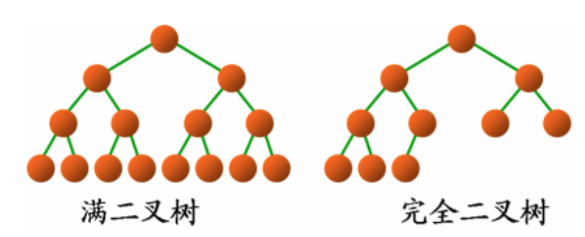

基础操作
二叉树 Binary Tree
- 每个结点至多只有二个子节点
- 第
i层至多有2i-1个结点- 第一层 21-1 =
1个节点 - 第二层最多 22-1 =
2个节点
- 第一层 21-1 =
i层树至多有2i-1个结点- 第二层最多 22 -1=
3个节点 - 第三层最多 23 -1=
7个节点 - 假设二叉树节点以数据方式存储
- 节点
i的 左节点：2 * i + 1|i << 1 + 1 - 节点
i的 右节点：2 * i + 2|i << 1 + 2 - 节点
i的 父节点：(i – 1) / 2|(i - 1) >> 1
- 节点
满二叉树
- 所有结点都有两个子结点
- 节点数达到最大值，即
2i-1个结点
完全二叉树
- 假设二叉树的深度为
i，则0~i-1层的树为 满二叉树 - 第
i层所有的结点都连续集中在最左边

二叉查找树 BST
Binary Search Tree ： 二叉查找树 / 二叉排序树 / 二叉搜索树
- 左子树上所有结点的值小于它的根结点的值
- 右子树上所有结点的值大于或等于它的根结点的值
- 中序遍历，即可得到有序的数列
- 树并不一定平衡，查找时在最坏的情况下仍然会有
O(n)的时间复杂度
平衡二叉树
Balanced Binary Search Tree
AVL 树
前苏联学者 G.M. Adelson-Velsky 和 E.M. Landis 名字而命名
- 查找的时间复杂度维持在O(logN)，不会出现最差情况
- AVL树在执行每个插入操作时最多需要1次旋转，其时间复杂度在O(logN)左右。
- AVL树在执行删除时代价稍大，执行每个删除操作的时间复杂度需要O(2logN)
红黑树
B树
多叉平衡查找树
B-Tree
BTree = B-Tree，
 Edit this page
Edit this page